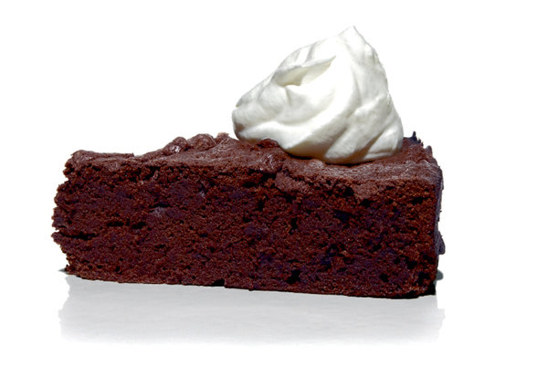

French Chocolate Cake

French Chocolate Cake
This cake is not only simply delicious but simple to make! It is ultra dense and easily satisfies with its chocolately goodness!
Ingredients
- 9 tablespoons 125 grams unsalted butter
- 7 ounces 200 grams bittersweet 70/72% chocolate, chopped
- 3 tablespoons water
- 3/4 teaspoon baking powder
- 1/3 cup 40 grams all-purpose flour
- 1/3 cup about 30 grams dark cocoa powder, sifted if lumpy. Dutched or natural will work here
- 4 large eggs, separated
- 1 cup 200 grams granulated sugar
- 1/2 teaspoon vanilla extract (optional)
- Two pinches sea salt
Steps
- Heat oven to 350 degrees.
- Butter a 9-inch round cake pan. Line the bottom of the baking pan with a round of parchment paper.
- Melt butter in a large saucepan, 3 quarts is a good size. Once melted, remove from heat and stir in chocolate until melted. Once melted, stir in 2 tablespoons water, then baking powder, flour and cocoa until just combined.
- In a medium bowl, whisk egg yolks with sugar, 1 tablespoon water and vanilla, if using, until pale and no longer lumpy. Stir into chocolate mixture until just combined.
- In a large bowl, beat egg whites and salt until stiff. Gently fold into chocolate mixture until most of the white streaks disappear. Be careful not to deflated cake.
- Bake for 25 to 30 minutes, until a toothpick inserted into the center of the cake comes out batter-free. Remove from oven and rest on rack for 5 minutes. Run knife along outside cake to make sure it isn’t sticking anywhere, then invert onto another rack, then back onto a cake plate. Eat warm or cold.